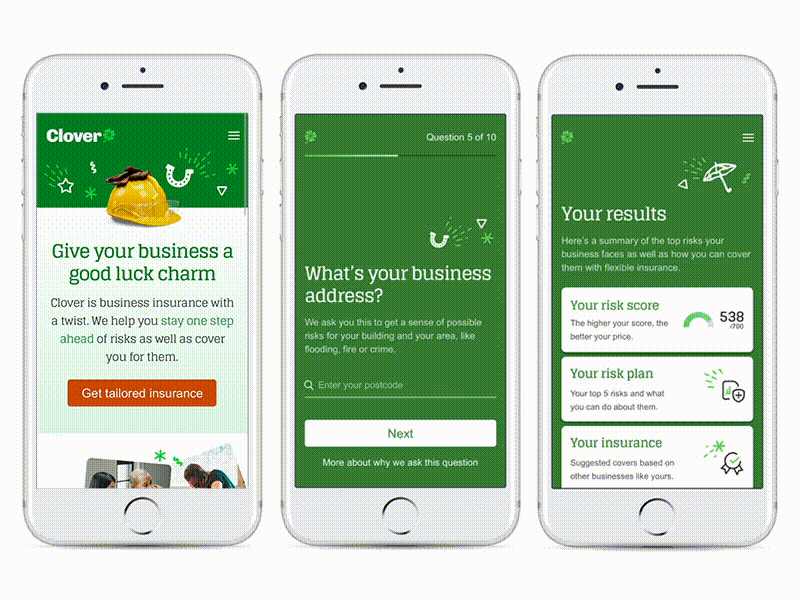
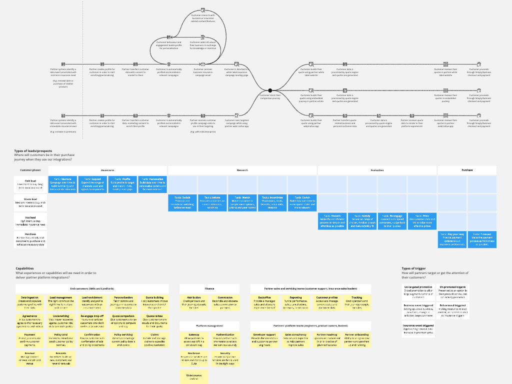
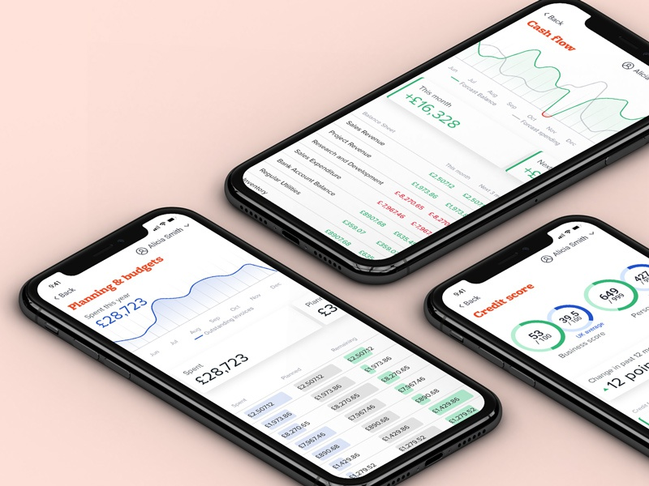
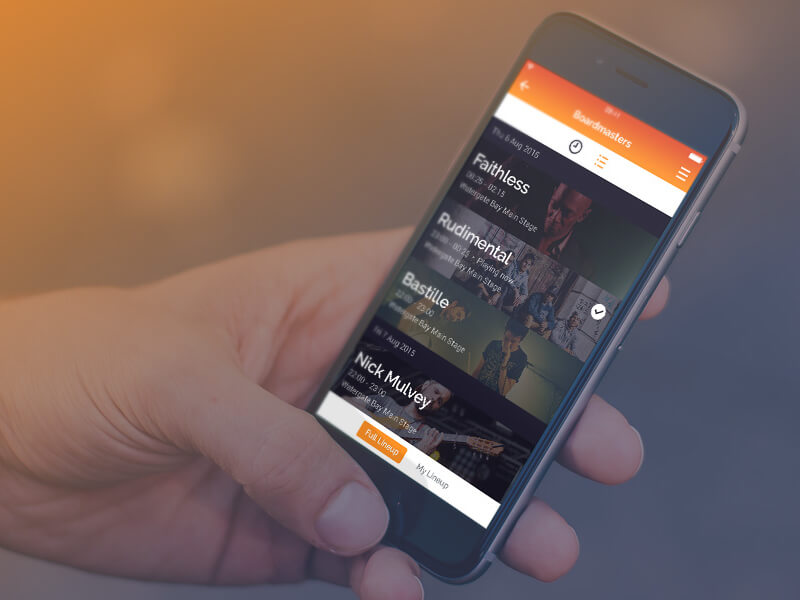
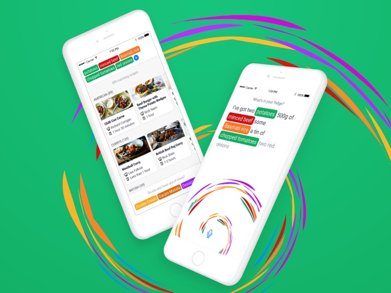
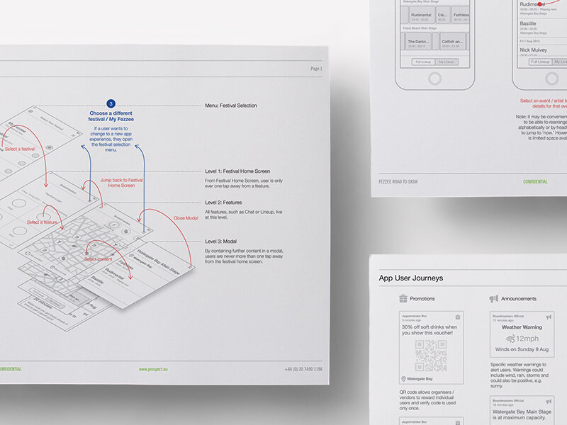
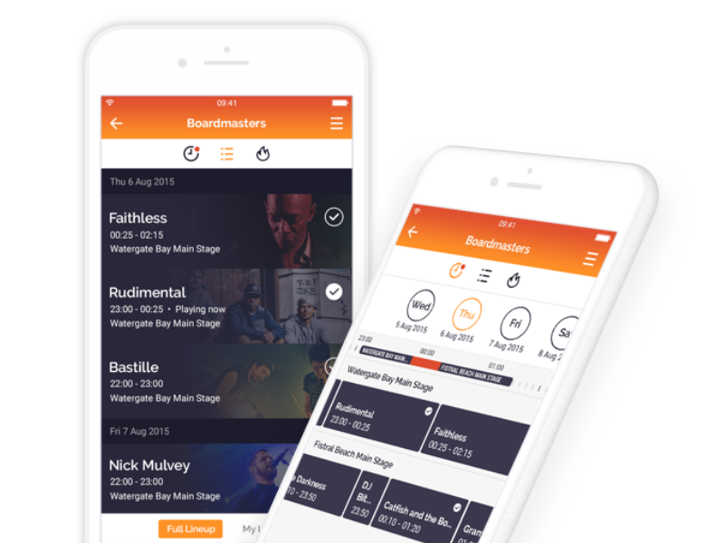
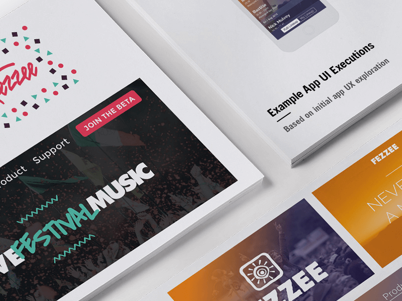
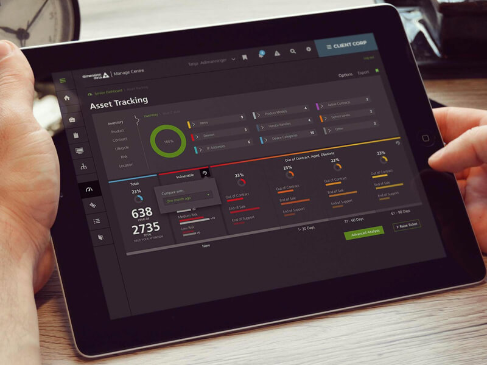

Past work
Funding Circle Global Navigation
GoalCreate a unified design approach for navigation across Funding Circle’s international websites and web apps, as well as sub-brands and secondary sites. Accommodating three different languages and eight information architectures, optimising for task performance and content discoverability.
WorkCatalogue existing navigation designs and collect data on their use. Establish navigation design goals and KPIs. Explore a range of navigation patterns, prototyping and testing to iterate designs. Design documentation and collaboration with engineers to create new front end components.
OutcomeA single, reusable, mobile-first navigation pattern used globally across logged out and logged in experiences that reduced time to complete navigation tasks by an average of 5 seconds.
Funding Circle Quote Comparison
GoalMake loan configuration more tangible and relateable to offer greater simplicity, relevance and transparency on costs. Create a memorable moment of utility and convenience.
WorkCustomer research and journey mapping to uncover behaviours, needs, goals and mental models. Creation of a 100 page customer acquisition pack with recommendations and considerations that informed this work as well as other teams working on sales and onboarding. Exploration of interaction designs to physicalise customisation and encourage experimentation, refined through prototyping and testing. Phased rollout of new interactions in collaboration with engineers.
OutcomeA new signature interaction pattern that can be reconfigured to serve different stages of the customer journey. 10% increase in end-to-end conversion, and a 15% increase in click-through at this stage in the onboarding process.
Funding Circle Journey UI Framework
GoalUnify Funding Circle's experience design used throughout the borrower lifecycle to make experiences more effective, relevant and personal.
WorkEnvison new experiences that leverage data, personalisation and feedback across desktop and mobile web apps. Create a shared vision through storyboards and prototypes. Consolidation of divergent approaches into single web framework in collaboration with engineers, baking in accessibility and mobile-first responsive patterns as first principles.
OutcomeRollout of new design language and interactions started as part of global rebrand that increased end-to-end conversion by 32%. A shared library of mobile-first components suitable for use cases across the customer lifecycle reduced time to launch new experiences from weeks to days.
Funding Circle Payments Administration
GoalCreate a new workflow and interface for payment administrators to reduce manual processes and track case management.
WorkShadowing of payment admins to understand mental models, tasks, processes and tools. Articulation of opportunities and principles to establish the purpose and value of interfaces within the app. Journey and workflow mapping to articulate current and proposed processes. Design of modular UI/UX framework tailored to high-volume financial transaction management.
OutcomeLimited release pilot to a small team run in parallel with existing system to test and iterate. The pilot group saved 1.5 hours of work per user per day compared to the control group, with 90% of transactions automatically reconciled.
More work








